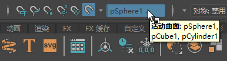
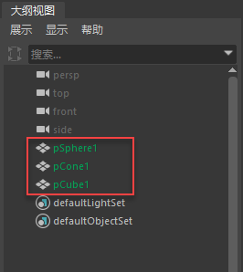

当多个曲面处于活动状态时，可以捕捉到所选内容中的任何对象。
设置多个激活曲面
- 选择场景中的对象。
注： 激活曲面可以是多边形网格、NURBS 曲面、GPU 缓存节点、构造平面或平滑网格预览网格。“激活”(Make Live)还支持隐藏的曲面。
- 执行下列操作之一：
- 单击状态行中的“激活”(Make Live)图标。
- 选择“修改 > 激活”(Modify > Make Live)。
选定对象将变为激活曲面。
第一个选定对象的名称将采用以下格式显示在“激活”(Make Live)图标旁边的字段中：
<FirstSelectedObject...>。将光标悬停在字段上会显示所有激活曲面的列表。“帮助行”(Help Line)中还会显示激活对象的列表。

提示： 可以打开“激活历史”(Make Live History)菜单 () 以显示先前激活曲面的列表。将光标悬停在此列表中的任何项上，还会在“帮助行”(Help Line)中显示激活曲面的完整列表。
激活曲面的线框颜色为深绿色，但它只在启用
“线框”(Wireframe)或
“着色对象上的线框”(Wireframe on Shaded)模式时显示。
相同的颜色将应用于
“大纲视图”(Outliner)中激活曲面的名称，从而更容易在一长串对象中找到激活曲面。

提示： 选择“窗口 > 设置/首选项 > 颜色设置 > 非活动 > 建模 > 激活”(Windows > Settings/Preferences > Color Settings > Inactive > Modeling > Live)，以更改“视口”(Viewport)中激活曲面的颜色和“大纲视图”(Outliner)中激活曲面名称的颜色。
- （可选）在“激活”(Make Live)图标或“激活”(Make Live)上单击鼠标右键，以在激活列表中添加或移除曲面。